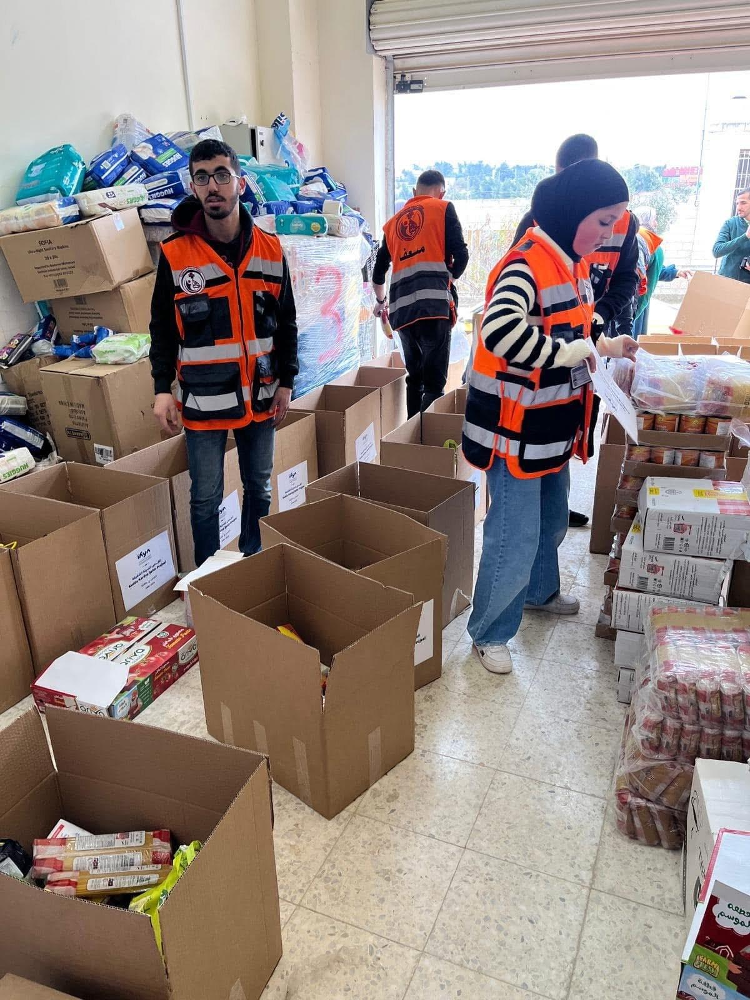
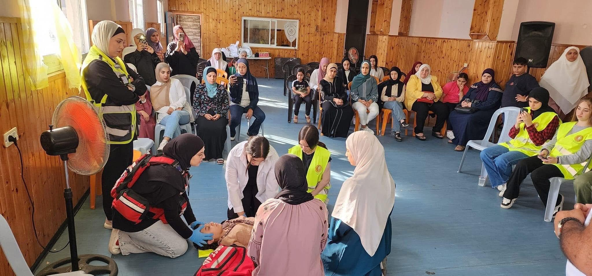
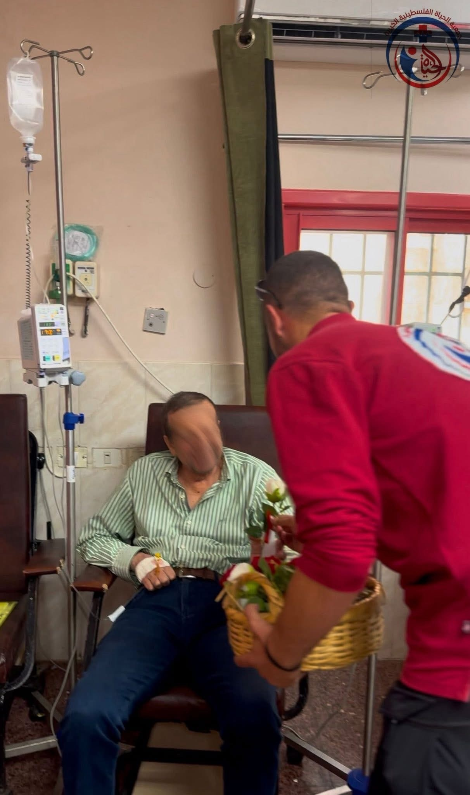
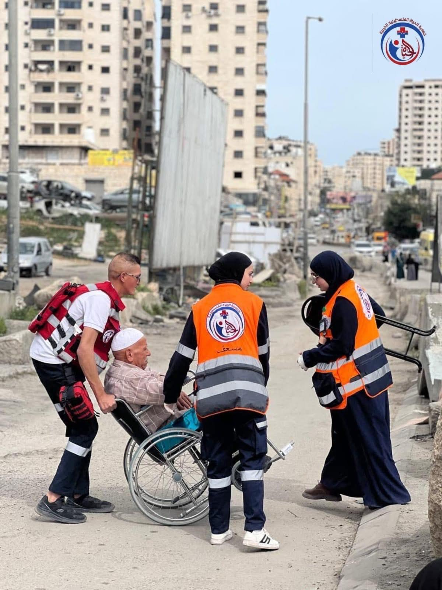

جمعية "الحياة الفلسطينية الخيرية" تقوم بِمَدّ يد العون للمحتاجين، ونشر ثقافة الإسعافات الأولية.
تأسست الجمعية في عام ٢٠٢٣ في مدينة رام الله والبيرة، وحصلت على الترخيص الرسمي في ٢٨ من تشرين الثاني.
بلدية البيرة
المشاركة في المناسبات الدينية الإسلامية والمسيحية، وتُقدم طرودًا غذائية وملابس للمحتاجين.
تقديم خدمات الإسعافات الأولية في حالات الطوارئ وتنظيم دورات تدريبية.
رعاية المرضى والأيتام من خلال زيارات لمستشفى رام الله في أول يوم من عيدي الفطر والأضحى.
مساعدة كبار السن على حاجز قلنديا وفي الوصول إلى المسجد الأقصى خلال شهر رمضان.
يضم فريق الجمعية 150 متطوعًا يُقدمون خدماتهم بكل إخلاص وتفانٍ.
تُقدم جمعية "الحياة الفلسطينية الخيرية" نموذجًا مُشرّفًا للعمل الخيري والإنساني، وتُؤكّد على أهمية تضافر الجهود لبناء مجتمعٍ يُنعم فيه الجميع بالأمان والرخاء.